From floor plan to shop drawings in one program.
Aerion™ HVAC Design Studio does the loads, the equipment, the duct design, the plans, the 3D and the paperwork from one drawing. Built by a residential HVAC designer with nine years of load calculations and system design behind it.
Plans from $40 a month. Cancel any time.
Version 1.5.69, November 25, 2026: your PC and one phone or tablet linked, Aerion in the web browser, files from other programs open with nothing to install, exports for AutoCAD, Revit, SketchUp and more, saving options and faster AI answers. Version 1.5.68 added reading every page of a plan set for framing with AI. Version 1.5.67 added picking any framing members to show, one box for each kind. Version 1.5.66 added 17 roof styles and 10 roof truss types in the building framing, doors and windows framed as built, doors and return air pathways read from your drawings, doors into garages in the loads, elbows and moving air in 3D, and a usability pass. Version 1.5.65 added roof shapes for the building framing (hip, Dutch gable, cross gable, shed, flat, gambrel and mansard) with valleys, overhangs and an AI roof suggestion, and the desktop app on Electron 45. Version 1.5.64 added room pressure follows the ENERGY STAR targets with plenum returns and exhaust fans, Manual S at design conditions with the heat pump balance point, residential sizing and code checks, IMC, IBC and Florida code checks, room labels you can move, Tidy selected labels, moving items with the keyboard, takeoffs kept off trunk reducers and trunk end caps, a usability pass, alignment guides and fitting previews, a full user manual, and updates can no longer crash the app. Version 1.5.63 added building framing across the views, Manual S at design conditions, plan review, customer suggestions, a Your models list, return air pathways in walls and ceilings, airflow through drawn openings, ducts held to the minimum size use their real size for friction and velocity, a Front faces control on the Layout, Snip copy fixed, minimum rectangular duct sizes, pick which way the front of the house faces and the loads change with the sun, duct labels on the Layout are written inside and along their duct, a Tidy labels button puts dragged labels back, the plan reader builds a sheet with several floor plans as separate floors that stack, Commercial shows plenum return air in the airflow simulation, the plan reader reads duct sizes, not door, window, lumber, steel or column sizes, and a Rotate tool on the Layout turns rooms, ducts, registers and equipment to any angle. Earlier updates added: the license key stays put between starts, prices from five online HVAC stores, ASHRAE's radiant time series for commercial loads, and a Snip tool in plan markup. Installed copies update themselves.
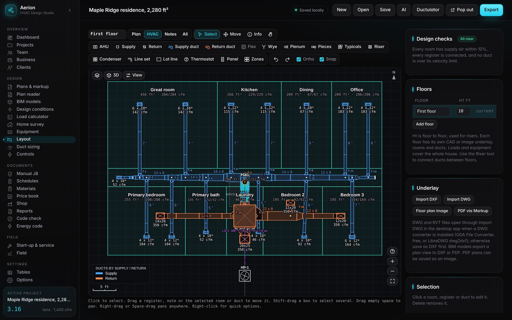
What's new
The last ten versions, in short. Installed copies update themselves and show what changed since your version.
Roofs and trusses
17 roof shapes and 10 roof truss types in the building framing, with an AI roof suggestion you can use or put back.
Framed as built
Door and window openings get king and jack studs, headers, cripples and sills. Pick which framing members to show, one box for each kind.
Doors and return paths from the plans
The plan reader picks up doors, transfer grilles, jump ducts and door undercut notes, and uses them in room pressure, the airflow simulation and the loads.
Room pressure
Door-shut pressure for every room, checked against the ENERGY STAR Certified Homes target (a program target, not code), with the transfer area to add.
Doors into the garage
A door into a garage or other unconditioned room is in the loads, as a partition at that space's temperature (ACCA Manual J, ASHRAE Fundamentals).
Manual S at design conditions
Capacity read from the maker's expanded table at your design conditions, sizing limits by equipment type (ACCA Manual S), and the heat pump balance point.
Air in the ducts
The airflow simulation moves air through each duct at its own CFM, on the plan and in 3D. Radius elbows sweep around the turn in 3D.
Front faces
Pick which way the front of the house faces and the sun loads follow. Duct labels run inside and along their duct.
Easier to use
Two usability passes: tools that fit a laptop screen, dropdowns that show the whole choice, Undo for a deleted room, and a full user manual.
Aerion on the job site New
Open Aerion in the web browser on a phone, tablet or any computer, with the same license, to show the work at the job site and make changes on the spot. Put it on your home screen and it opens with no signal. Open Aerion in your browser or Aerion Commercial.
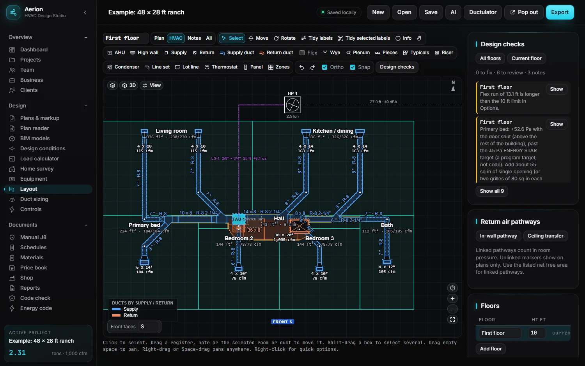
One drawing runs the whole job
Draw the house once. Loads, airflow, duct sizes, equipment, schedules and the shop list all come from that drawing and update when it changes.
A duct layout that looks like the one you'd draw
Draw trunks, branches and flex on the plan, or let Aerion lay out the whole system and rank the options. Sizes come from friction rate, equivalent length and the blower's static pressure.
- Trunk-and-branch, extended plenum, reducing plenum and radial layouts
- Automatic layout with ranked choices, or draw it yourself
- Fittings, takeoffs, dampers, risers between floors
- Design checks that say what to fix, with one-click clash fixes
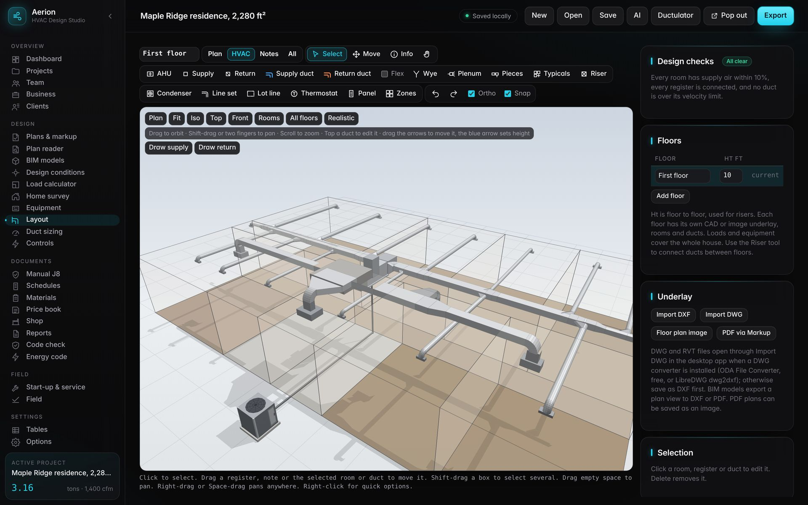
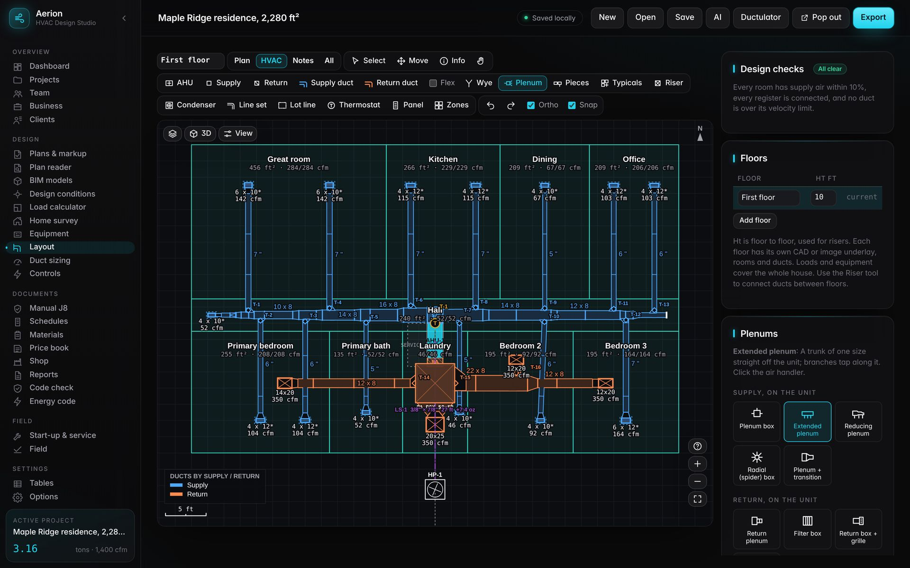
Plenums in one click
Pick the kind of plenum, click the air handler, and the trunk and the branches to every open register are drawn for you.
- Plenum box, extended, reducing, radial and transition plenums
- Return plenum, filter box, return box and return drop
- Distribution boxes anywhere in the run
- Boxes carry through to duct sizing, the shop list and 3D
Room-by-room loads you can trace
Every room shows where its load comes from: walls, glass, ceiling, floor, infiltration, people and ducts. Change a window and the airflow and duct sizes follow.
- Sensible, latent and heating loads for every room
- Design conditions and climate zones for US locations
- Exposure taken from the plan as you draw, and turned with Front faces
- Doors into a garage or attic counted as partitions (ACCA Manual J)
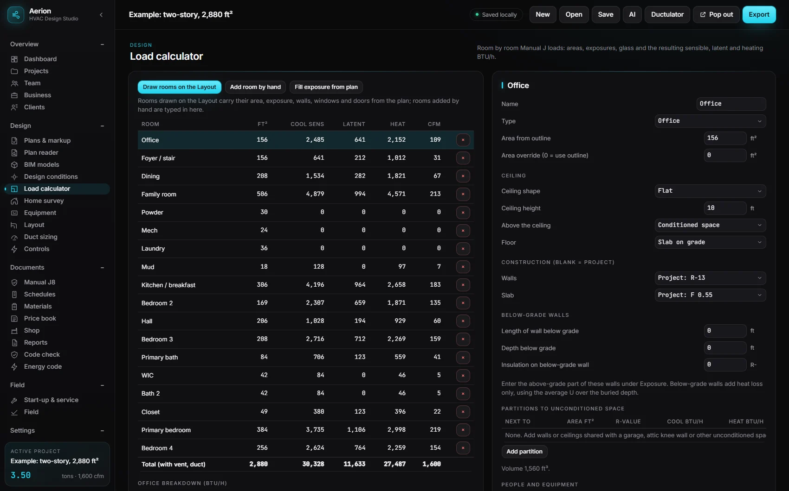
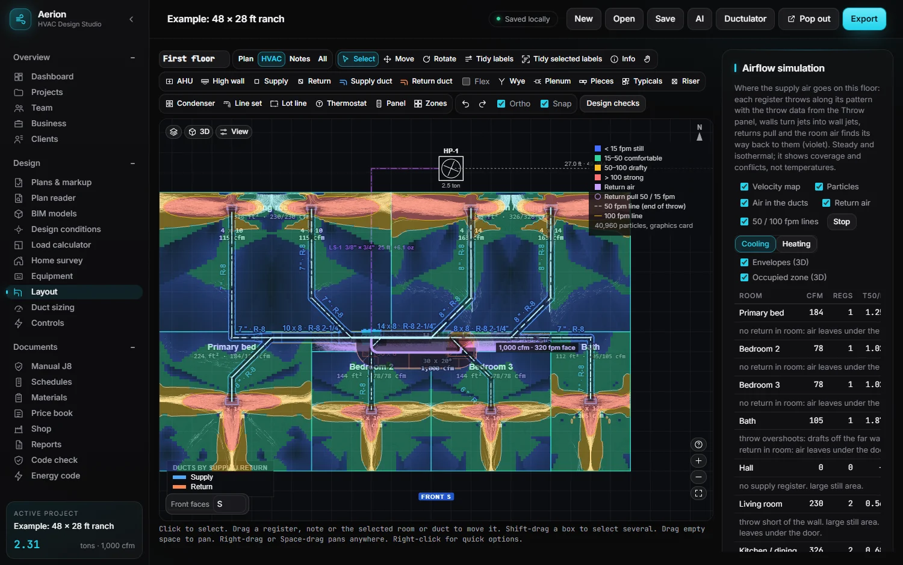
See where the air goes
The airflow simulation shows throw, velocity and drafts for every register, and the air moving through each duct at its own CFM, so problems show up on screen and not on a callback.
- Velocity map of each room
- Air in the ducts, on the plan and in 3D
- Return air under doors, through transfer grilles and jump ducts
- Comfort check in the occupied zone, cooling and heating modes
Mark up and measure the architect's plans
Open the plan set, set the scale, and mark up or take off straight from the sheets. No separate PDF program.
- PDF markup with a tool chest for ducts, registers and notes
- Measure lengths and areas to scale
- Combine sheets and label pages
- Send a sheet to the Layout page as the underlay
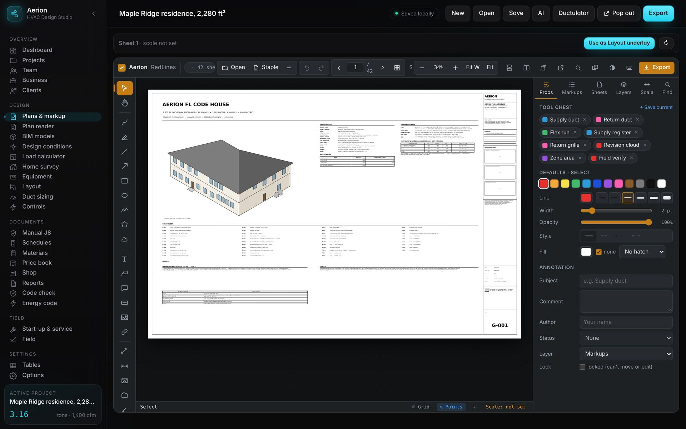
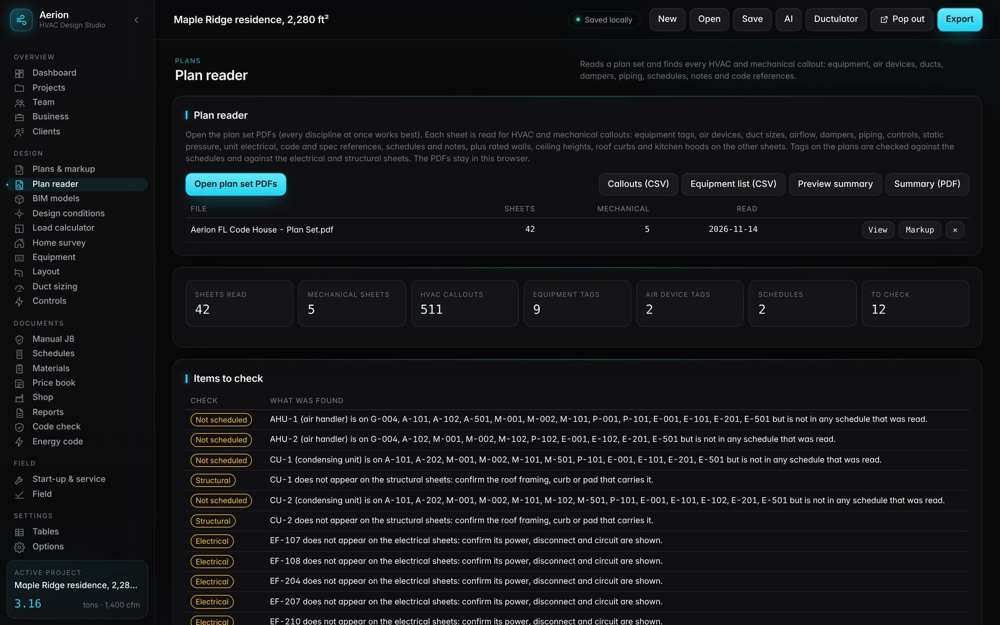
A plan reader that catches what the plans left out
Aerion reads a plan set and lists the equipment tags, air devices, duct sizes and schedules it finds. Then it cross-checks them and calls out what is missing: a unit tagged on a plan but not in any schedule, or scheduled but not on a plan; equipment with no power on the electrical sheets or no support on the structural sheets; a missing duct smoke detector, economizer or fire damper. You find the gaps before the plan checker or the installer does.
- Reads mechanical, structural and electrical sheets
- Lists equipment that is on the plans but not scheduled
- Exports callouts and equipment lists
- Imports DXF and DWG drawings
Doors and return air paths, read from the plans
Build rooms from a floor plan sheet and Aerion brings in the doors and the return air pathways the plans mark, not just the rooms. Door swings no longer put notches in the rooms it traces.
- Inside doors between rooms and exterior doors on their wall
- Transfer grilles (TG), jump ducts (JD) and their printed sizes
- Door undercut notes
- Used in room pressure, the airflow simulation and the loads, and drawn in 3D, on the plan set and in DXF
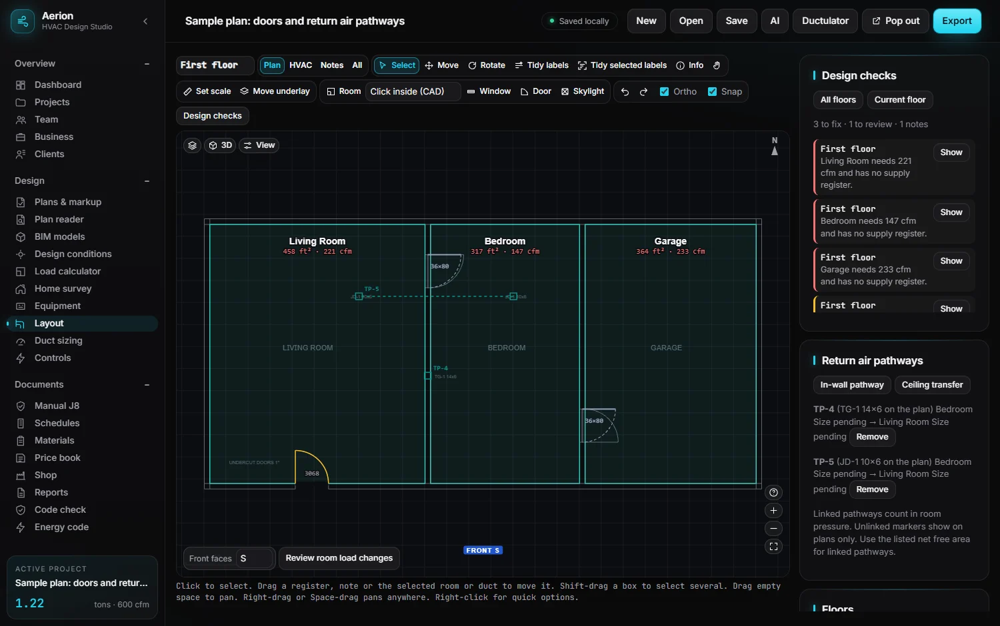
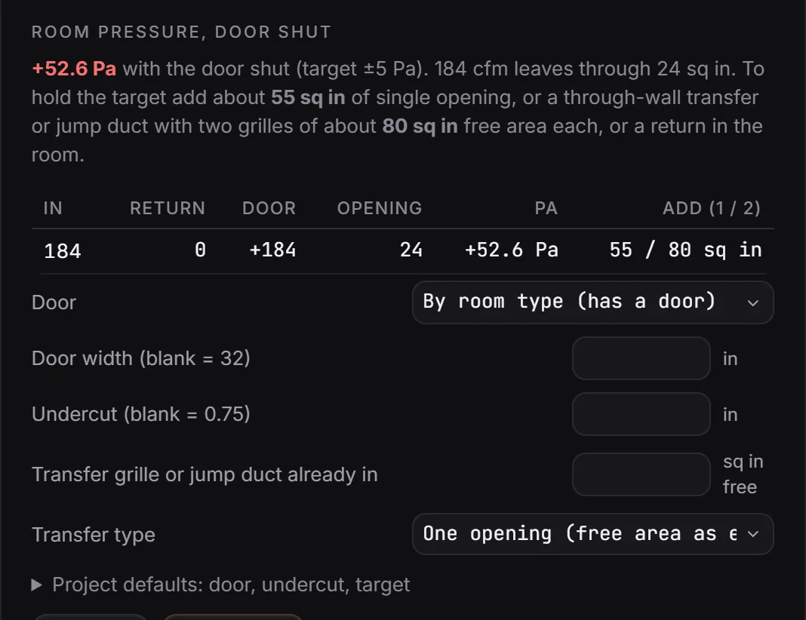
Room pressure with the door shut
Every room with a door gets its pressure in pascals with the door shut, from its supply, its return, exhaust fans and the openings it has. When it is over the target, Aerion says how much transfer area to add.
- Homes: the ENERGY STAR Certified Homes target, ±3 Pa (±5 Pa for bedrooms with 150 cfm or more), labelled a program target, not code
- Rooms that pull air in show a minus sign
- Transfer grille, through-wall pair or jump duct sizes
- Return location checks by the IRC, IMC and IBC sections, to verify against the edition adopted
From a plan set to a 3D building
Aerion finds the walls, doors, windows and rooms on the floor plans and builds the 3D model to design in. Bring in building models too, and send your duct design back out in 3D.
- Plan set to 3D with room names and areas
- Open building models and IFC files
- Send ducts, fittings and equipment to your BIM modeling program
- Export the plan as DXF or PDF
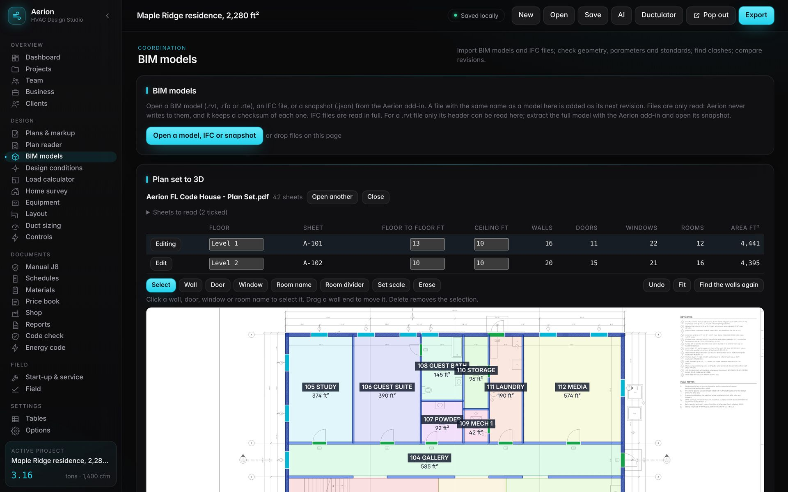
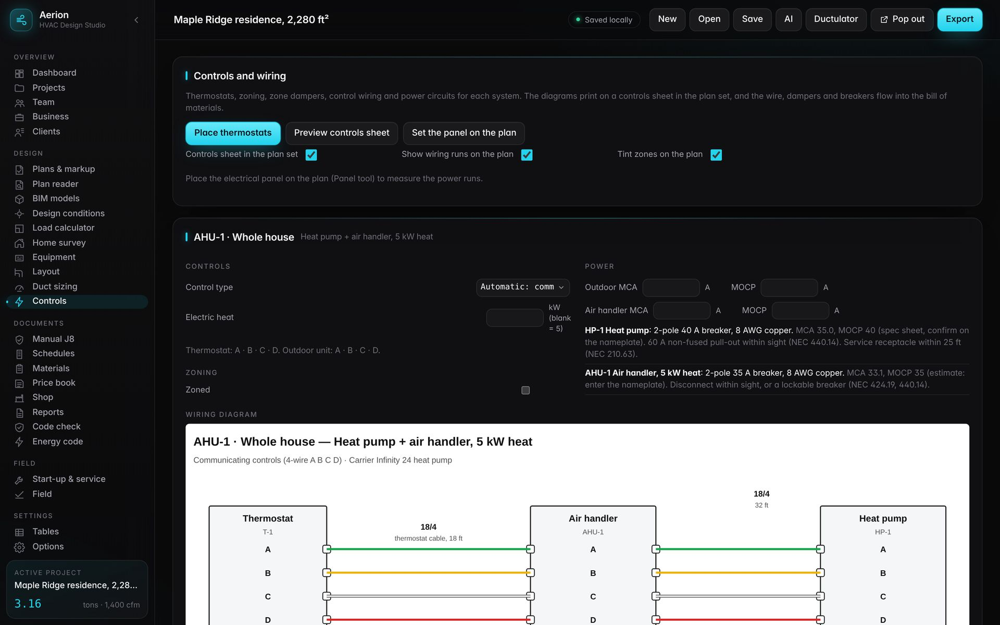
Controls and wiring, drawn for you
Thermostats, zoning and low-voltage wiring come out as a diagram and a schedule the installer can follow.
- Wiring diagram for each system
- Zone dampers and panels
- Breaker and wire sizes for the electrical schedule
- Controls sheet for the plan set
Permit-ready reports and code checks
The permit report, plan set, proposal and commissioning sheet come out of the same job file, with the code items checked against the numbers.
- Mechanical and energy code checklists by jurisdiction
- Equipment, register and duct schedules
- Operating cost and equipment comparisons
- Bill of materials with a built-in price book of thousands of items
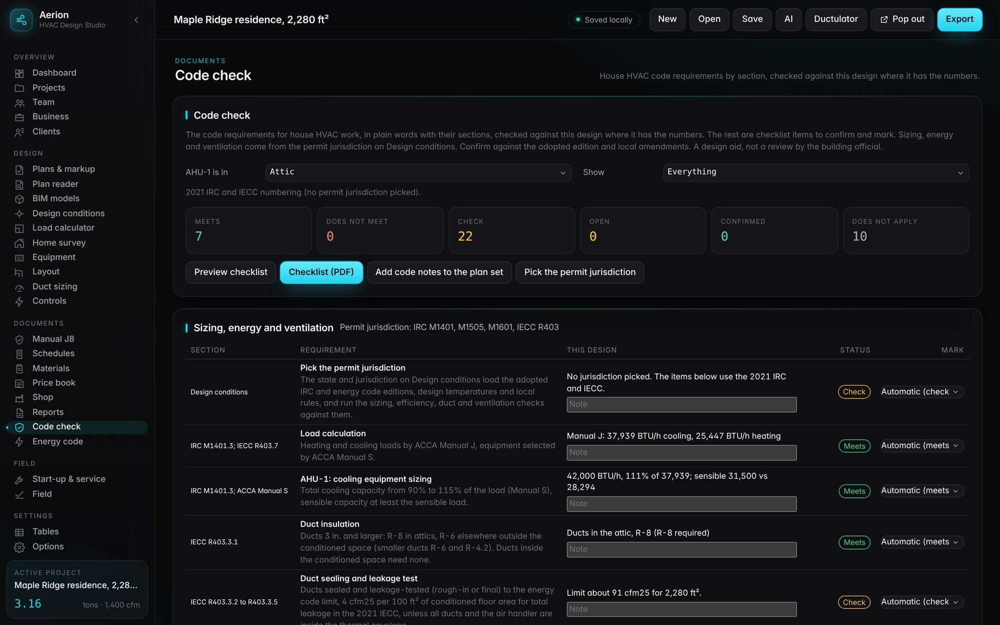
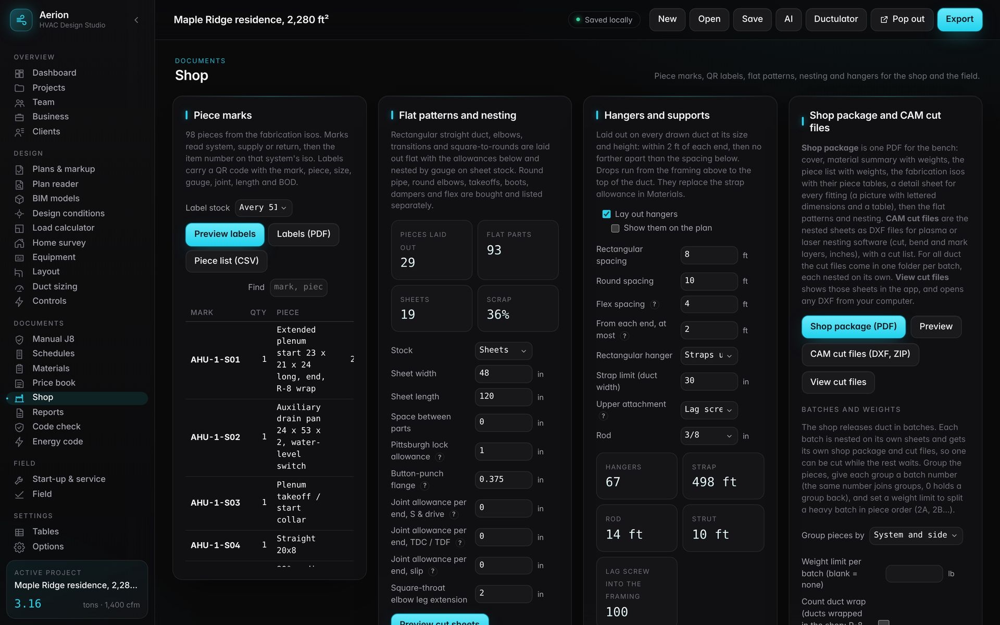
From design to the sheet metal shop
Every fitting gets a piece mark. The shop package has the cut lists, diagrams and labels; commercial jobs add cut files for the plasma table.
- Piece marks and QR labels
- Flat patterns and sheet nesting
- Hangers and supports
- Shop package PDF and DXF cut files
See the duct run before it's built
Every duct, fitting and register is a real 3D piece at its real height. Check clearances, colour the systems, and walk the installer through the job.
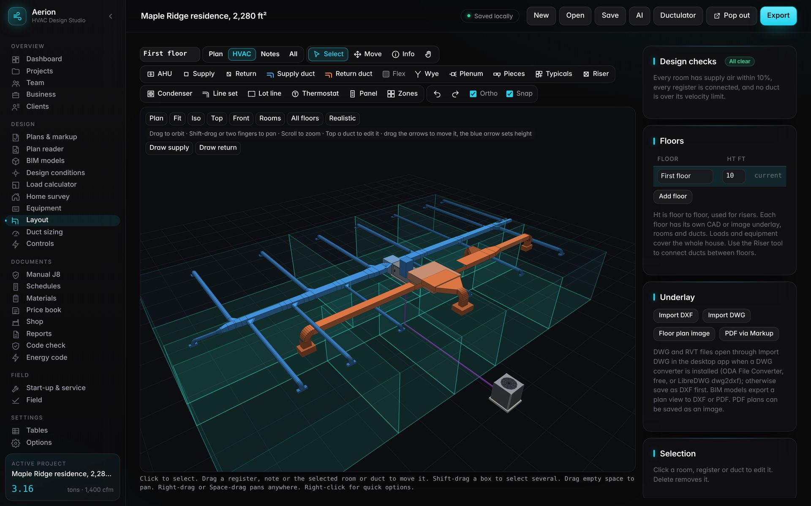
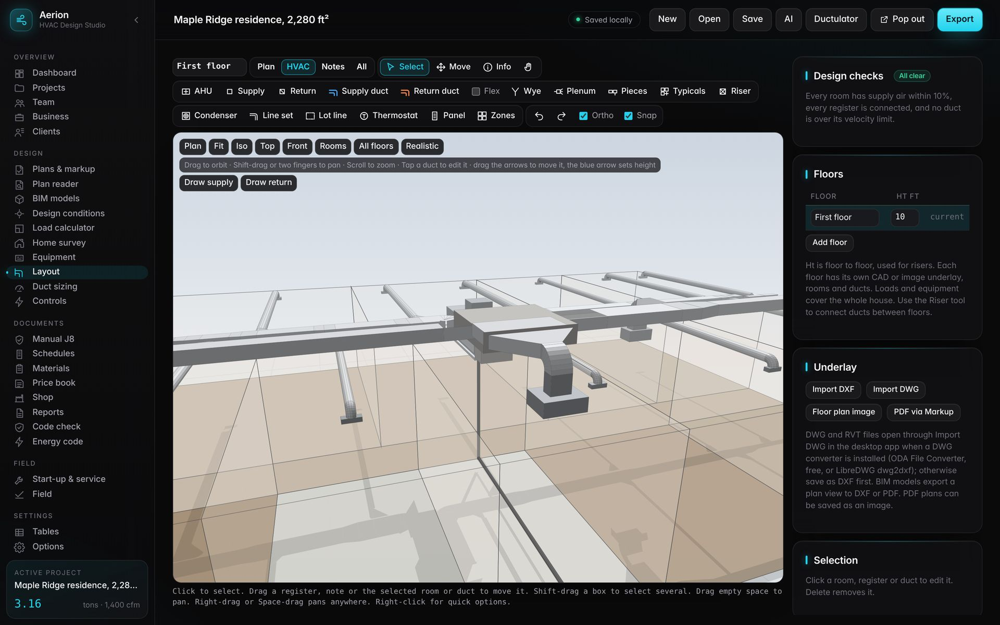
Roofs, trusses and framing around the ducts
Turn on the building framing to see what the ducts have to get past: rafters or trusses, joists, studs, headers and plates, in plan, 3D, sections and the Layout exports.
- 17 roof shapes: gable, hip, Dutch gable, gambrel, mansard, saltbox, shed, butterfly and more
- 10 truss types: king post, queen post, Fink, scissor, attic, mono and more, or stick framed
- Door and window openings framed with king and jack studs, headers, cripples and sills
- Pick which members to show, one box for each kind
- Suggest roof with AI, from the floor's shape and the roof framing read from the plans
The framing is a drawing aid. Member sizes and roof shapes are drawing defaults; Aerion does not size structural members. Check the structural drawings.
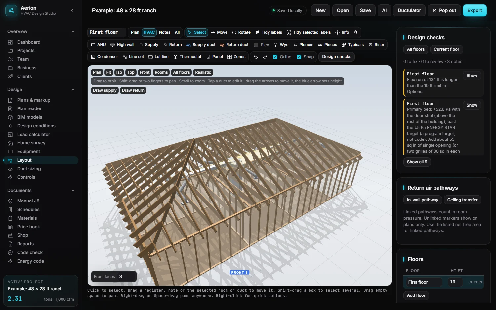
Everything in the box
No add-on modules to buy for the basics. This is what ships.
Load calculator
Room-by-room cooling and heating loads.
Design conditions
Outdoor and indoor design data by location.
Home survey
Survey an existing home for a retrofit.
Equipment selection
Match equipment to the load at your design conditions, read from the maker's expanded table (ACCA Manual S), with the heat pump balance point.
Air filters
Pressure drop for filters and media cabinets at any airflow.
Duct layout
Draw or auto-route supply and return ducts.
High wall units
Place ductless wall units on the plan, sized to each room's load.
Plenums
Extended, reducing, radial and return plenums in one click.
Duct sizing
Friction rate, velocity and static pressure for every run.
Airflow simulation
Throw, velocity and comfort in the room, return air through the doorways, and the air moving through each duct at its own CFM.
Air balance
Balancing dampers in the duct design, each room checked against its airflow, and door-shut room pressure in pascals against the ENERGY STAR target for homes.
Inside doors and return paths
Doors, transfer grilles and jump ducts, drawn or read from the plans, used for room pressure, the airflow simulation and the loads.
Line sets and condensers
Line set sizing and outdoor unit sound at the lot line.
Controls and zoning
Thermostats, zones, dampers and wiring.
Plans and markup
Mark up and measure PDF plan sets.
Plan reader
Finds HVAC callouts, tags and schedules on the plans.
Missing-item checks
Calls out equipment, power, supports and dampers the plan set left out.
DXF and DWG import
Use CAD drawings as the underlay.
3D model import
Open an OBJ or glTF model and get a floor plan to trace rooms on.
Plan set to 3D
Builds the 3D building from the floor plans.
3D view
See and edit the ducts in 3D, with radius elbows and the air moving through them.
Building framing
17 roof shapes, 10 truss types and framed openings around the ducts, in plan, 3D and sections.
Clash checks
Finds ducts that collide and fixes them.
BIM export
Sends the duct design to your modeling program.
Load worksheets
Worksheets with every input traced.
Schedules
Equipment, register and duct schedules.
Materials
Bill of materials from the drawn ducts.
Price book
Thousands of priced items for bids from five online HVAC stores (HVACDirect, The AC Outlet, ACDirect, Alpine Home Air and National Air Warehouse), each with the date its prices were read. Opens fast, even with the full catalogs.
Shop package
Cut lists, patterns, labels and cut files.
Reports
Permit report, plan set, proposal, commissioning.
Code check
Mechanical code items checked against the design.
Code data updates
Code data reviewed every 6 months, with a check button in Options.
User manual
A full manual, a page for each part of the app.
Energy code
Energy code worksheets by jurisdiction.
Start-up and service
Start-up readings and service records.
Test and balance
Enter balance readings against the design airflow and print the summary.
Field
Progress, questions and photos from the job.
Proposals and invoices
Bids, time and invoices from the job file.
Clients
Leads and clients in one pipeline.
Team
Seats for each designer and shared project files, with every version kept and a notice when someone has a file open.
Aerion AI
Optional add-on, $10 a month. Ask about your design, or run one-click agents for a QA/QC review, the permit set and pricing the estimate. Changes wait for your OK.
Automatic updates
The desktop app updates itself and shows what changed since your version.
Your own AI
Use your own key from Anthropic, OpenAI, Google Gemini and others, or an AI on your own PC.
Commercial and multifamily jobs
A separate edition built for commercial work, on the same drawing tools.
- Commercial loads by space, floor and zone
- Hourly cooling loads by ASHRAE's radiant time series method, from ASHRAE's own tables
- Roof and wall colour in the sun load, floor covering in the heat storage
- Rooftop units and VAV systems
- Ventilation, exhaust fans and fire dampers
- Commercial energy code checks and annual energy
- Cut files for the sheet metal shop
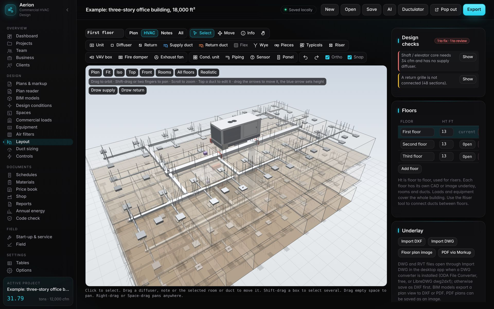
How Aerion compares
Most HVAC design software is sold piece by piece: loads in one program, ducts in another, and the drawings, proposals and pricing somewhere else. Aerion puts them on one drawing for one price.
Aerion Pro
Loads, equipment, ducts, plans, 3D, the airflow simulation, the shop package and bids, in one program.
A desktop load and duct suite
For residential. Commercial tools usually cost extra, and drawing, proposals and pricing are often separate modules.
A cloud commercial platform
Per seat, for commercial engineering. Most don't do residential room-by-room loads.
Typical list prices we found for products in each group, November 2026. Prices change, so check before you buy.
Questions to ask any HVAC design software
| Ask | Aerion |
|---|---|
| Are loads, equipment and duct sizing in one price? | Yes, in every plan. |
| Do you draw the ducts on the plan, or is that extra? | Duct layout, plenums and sizing are included. |
| Can it lay out the ducts for you? | Yes. It lays out the whole system and ranks the options. |
| Can you see where the air goes? | The airflow simulation shows throw, velocity, drafts, return paths and the air moving through each duct. |
| Does it check room pressure with the doors shut? | Yes, in pascals, against the ENERGY STAR target for homes, with the transfer area to add. |
| Does it read the plan set? | The plan reader lists equipment tags, air devices and schedules, calls out what the plans left out, and brings in doors and return air paths. |
| Is there a real 3D model? | Every duct and fitting at its real height, with clash checks, a Revit add-in and IFC. |
| Does it make the shop package? | Aerion Pro: piece marks, cut lists, flat patterns and labels. Commercial adds cut files for the plasma table. |
| Does it price the job? | A price book from five online HVAC stores, with bids and invoices in Aerion Pro. |
| Does it work without internet? | Design work runs offline. |
| Is it ACCA approved? | Approval is in progress. Until it's complete, check which software reports your building department accepts. |
Pricing
Every plan starts with a 14-day free trial. Pay monthly, or save about two months with yearly billing. Cancel any time. Prices in US dollars.
Every plan includes one Windows PC plus one phone or tablet linked to it, with your jobs kept in step on both.
Launch offer: 30% off your first year with code LAUNCH30 at checkout. Ends February 20, 2027.
Aerion Design
- Loads, equipment and air filters
- Duct layout, plenums and sizing
- Plan markup and plan reader
- 3D view and airflow simulation
- Code checks and reports
Aerion Pro Most popular
- Everything in Design
- Shop package and cut lists
- Field start-up and service records
- Clients, bids and submittals
- Team seats and shared projects
Aerion Commercial
- Commercial and multifamily loads
- Rooftop and VAV systems
- Ventilation and exhaust
- Commercial energy code checks
- DXF cut files for the shop
Aerion Complete
- Aerion Pro and Aerion Commercial
- Both apps on one license
- Residential and commercial jobs
On the go? On your PC, open Options › Link a phone or tablet and scan the code with your phone. It opens Aerion in the browser (or Aerion Commercial), linked to your PC, at no extra cost.
How it works
Checkout and receipts are handled by Stripe, our payment processor.
Pick a plan
Choose a plan in the store. The 14-day trial starts right away.
Get your key
Your license key shows on screen as soon as checkout finishes, with the download link.
Install and activate
Install Aerion, open Options › License, and enter your email and key.
Design
Your key renews itself with each payment. Move it to a new computer from the same screen.
Questions
What do I need to run Aerion?
A Windows 10 or 11 computer (64-bit) with an internet connection now and then for license renewal. Design work runs offline.
Can I use Aerion at the job site on a phone or tablet?
Yes. Every license includes one phone or tablet linked to your PC at no extra cost. On the PC, open Options › Link a phone or tablet: a code and a QR code show. Scan it with the phone (or type the code in Aerion in the browser) and turn on Keep my jobs on my PC and my phone in step. A job you change on one shows up on the other. With no signal at the job site you keep working, and the changes go out when you are back online. The AI that runs on your own PC needs the Windows app.
Can I try it before paying?
Yes. Every plan has a 14-day free trial. Until a license is active, design work stays open; saving, printing and exports unlock with the license.
Which calculation methods does it use?
Loads, equipment selection and duct sizing follow the industry-standard residential methods, and every result shows the inputs behind it so you can check it. Aerion is going through software approval now; until that is complete, confirm with your building department which software reports it accepts.
How many computers can I use?
Each license runs on one Windows PC at a time, plus one phone or tablet linked to that PC. Use Move to another computer in Options › License to switch PCs; linking a new phone or tablet replaces the old one. Businesses can add seats for each designer.
Can I cancel?
Yes, any time from your billing page (the link is in every receipt email). Your license keeps working to the end of the period you paid for. See the refund policy.
Where does the data come from?
Outdoor design conditions, climate zones, degree days and code adoption records are built in from published government and industry sources. Licensed tables that cannot be bundled can be loaded from your own copy.
How do I get help?
Reply to your purchase or receipt email and it comes straight to us. Your receipt email has a link to your billing page too.